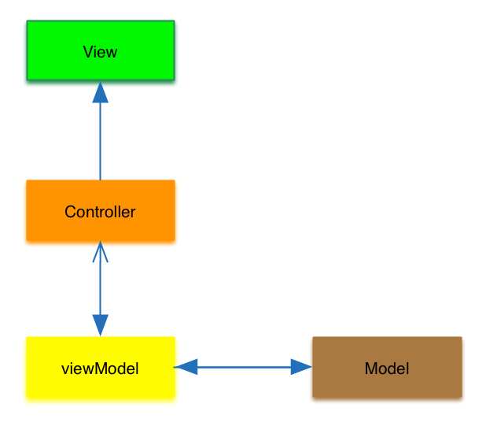
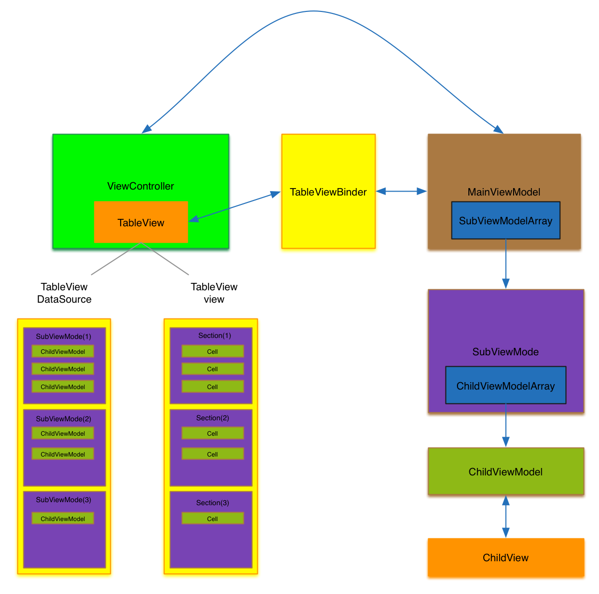

iOS 使用MVVM+TableView+RAC构建复杂列表界面
什么时候需要这么干？
当一个业务型APP发展到一定程度的时候，首页一定是一个业务方施展拳脚的重要阵地，这就会导致首页会有很多业务模块，可能每个业务模块都很复杂，有自己的数据源，有自己的业务逻辑。有的模块可能只需要一个固定的展示区域，有的模块可能需要一个列表。并且业务变化很快，要非常方便的删除或者添加一个新的模块，就像这样～
云音乐个性推荐这一页面由，Banner模块+推荐模块+N多模块。而且可能多人同时开发这个界面，良好的结构必不可少。
总结起来以下几点
- 一个页面有多个复杂业务模块
- 一个模块中可能出现列表样式
- 需要非常方便的删除，添加，移动，复用每个模块
- 需要模块间完全解耦合，逻辑，数据源彼此隔离，方便多个开发并行开发
MVVM是什么？
网上讲MVVM的文章已经太多了，想要了解可以自己搜索。这里说一下我自己的理解。一个App大致可以分为三个部分，数据处理（model），逻辑处理（controller），视图（view），根据这三个部分我们可以想到传统的MVC架构。其实在一般的小型App中用MVC架构可以完全搞的定了，但是在一些大型的App中业务逻辑相当复杂，这样会使得逻辑层特别臃肿，所以我们不得不把逻辑层拆分成两个部分，视图逻辑（controller），业务逻辑（viewModel）。
- controller包含对View操作的逻辑，比如根据数据来判断View的显示和隐藏，Text的Color和Size。
- viewModel包含对原始数据的处理和用户操作的处理，比如说一个评价界面，把原始数据转化成View要使用的数据需要在业务逻辑中实现，用户评价了什么，点了几颗星星，是否允许用户提交评价，这些也需要在业务逻辑中实现
controller中只对View进行操作，其他的逻辑都放到viewModel中，这就使得原本臃肿的逻辑层变得清晰有条理。controller中会有对viewModel的引用，并且用RAC绑定viewModel中的变量，这样viewModel只要更改自身属性就能达到更改View的效果，不需要引用controller。

一起从头开始搞起
我们要搞什么？
我们要做一个包含三个不同model的界面，每个model彼此隔离，有自己的数据源，其中一个Model是一个不确定数量的列表，另外两个是固定的View，三个model位置可以随意移动。
页面整体架构
在最开始先给大家介绍一下页面的整体架构是什么样子的，总共包含几个部分，每个部分的作用是什么，数据流向是怎样的，整个架构如何运作。
- 首先我们需要创建一个
ViewController，在这个ViewController中一定要包含一个TableView来当作这个界面所有视图的容器。之后的每一个子model都会做为这个TableView的一个Section，这样每个子model都可以轻松控制自己包含多少个Cell。 - 之后我们要为这个ViewController创建一个
MainViewModel，这MainViewModel的主要工作就是管理所有子model，比如每个子model在列表中的位置。 - 之后我们要去实现一个
TableViewBinder，它的作用是绑定MainViewModel和ViewController中的TableView，MainViewModel为TableView提供数据源，TableView为MainViewModel提供刷新界面的方法。在TableViewBinder中我们需要实现TableView的一些delegate，并且调用MainViewModel的方法获取数据源给TableView使用，而且要给MainViewModel中的一些用来刷新界面Block赋值，让MainViewModel有刷新界面的能力。 之后我们要为每个子model创建一个
SubViewModel，在SubViewModel中的主要任务就是处理当前子model的业务逻辑。SubViewModel必须要实现以下两个个接口1.返回当前SubViewModel有多少个
ChildViewModel（返回数量）2.返回对应Index对应的ChildViewModel（返回具体内容）
SubViewModel和ChildViewModel之间有什么关系？一个SubViewModel可以包含零个或者多个ChildViewModel。其实之前已经说过了SubViewModel会对应TableView中的一个Section，SubViewModel的数量就是TableView中Section的数量，那么ChildViewModel也就对应着TableView中Section中的Cell，SubViewModel中ChildViewModel的数量就是这个SubViewModel对应Section中Cell的数量。
- 每个
ChildViewModel都要一一对应一个ChildView,这个ChildView也就是要最后要绘制到列表上的View，ChildViewModel可以实现一些针对于ChildView比较细节的逻辑，ChildViewModel只暴露一些ChildView需要的字段，ChildView会持有ChildViewModel的引用，并且用RAC绑定ChildViewModel暴露出来的属性，这样就能达到ChildViewModel更新属性ChildView也跟着变化的效果。ChildViewModel中必须要实现一个返回ChildView对象的接口，这样可以吧ChildViewModel和ChildView一一对应起来。
上面出的逻辑读起来可能有点迷惑，下面画个图

###